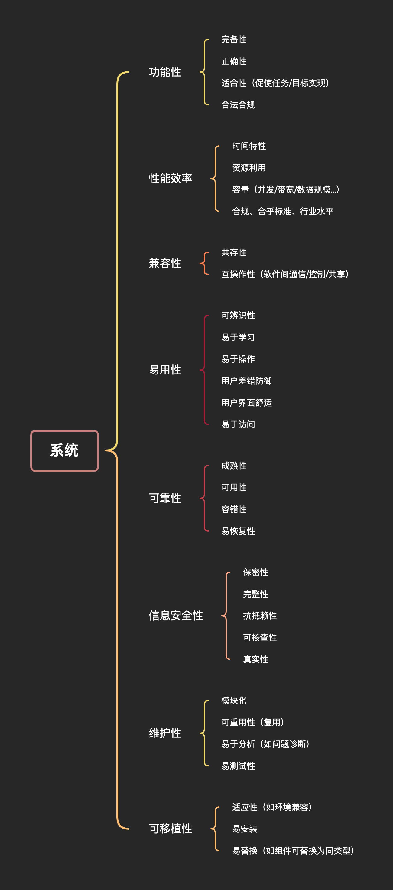

推倒樊笼 -- 设计能力
前言
未经思考的人生不值得一过 -- 苏格拉底。
本篇是对近期职业发展思考后所整理的内容输出。 和我互动过的读者、以及一直关注我的动向的读者知道：我于去年年中做出了推倒樊笼重新出发的决定，当时在博客平台，还有读者和我私信交流此事。 今年我会整理关键内容和读者分享。
正其末者端其本，善其后者慎其先
随着AI的涌现和快速发展，Coder们会发现编写软件功能单元代码的门槛越发降低，甚至"机械性"的工作，从脑力工作退化到体力工作并急剧衰变为AI可完成的工作。 例如标准化的界面绘制、模板化的接口实现。
时代决定了我们无法像20年前的前辈从业者般，可以惬意地享受职业，在缓步的成长中又获得丰厚的回报。
因此，我们要重视"发端"，并选择最佳路径，打破限制你的樊笼，突围以获得成长空间。
作者按：何谓樊笼？限制你进步的约束，无论是主观意识层面的障碍，还是客观层面的工作内容
天下难事必作于易，天下大事必作于细
想要做成大事难事，需要将其分解为易事、小事。设计过程需要将问题不断分解，并制定分解后的问题的解决方案。
要进行有效的设计，需要做好以下工作：
- 全面的了解需求，避免错误
- 准确的对需求进行分级，避免主次偏差
- 了解所需背景知识，采用“共识”，降低学习成本，避免成本过度损耗
当这些工作完备，可进入系统设计和模块单元设计！ 笼统的来讲，系统设计偏重于：
- 体系结构定义，有效的将职责划分到不同的模块，定义好边界，解耦
- 分层，屏蔽细节 最终体现为系统框架；
模块单元设计偏重于：
- 功能完整度和有效性
- 性能指标 最终体现为各种业务实现和"轮子"。
作者按："轮子"是固化的内容，可以是特定的模块单元，例如OKHttp、MyBatis，也可以是含有一整套轮子的小系统框架，例如Spring-boot。
衡量轮子和框架的标准
闭门造车开门合辙。
抛开正确性（这是最起码得要求），一个优秀的轮子和框架，从功能范围上：
- 应当尽可能聚焦，关注某一类问题，并在解决此类问题时，尽力做到完整
- 解决同类型问题时，可以通过扩展
- 可以通过组合的方式，将多个轮子联合使用
从使用方式：应当尽力做到简单，易理解，符合大众习惯。
作者按：这里的描述略显抽象，举几个例子： 当我们制作一个处理HTTPS协议的轮子时：
- 应当优先关注HTTPS协议本身的定义与实现，不应当杂糅其他内容，例如多线程，功能应当完整，例如HTTP1.0/HTTP1.1/HTTP2的核心部分应当完整实现，SSL/TLS应完整实现。
- 当处理HTTP3时，使用扩展包要优于在轮子内部大范围修改；受益于HTTP协议本身的设计优异，这一点感受不明显，若是解决文件传输问题，提供FTP实现和HTTP实现，则较为鲜明。
- 假设我们有类似Retrofit的框架轮子，则可以组合多个轮子共同使用，例如OKHTTP+Rxjava，OKHTTP+Java8 concurrent
不难理解，衡量轮子和框架的标准，即设计轮子和框架的标准，随着工作深度的发展，读者诸君均会面临从"挑选"到"自建"的转变。
设计能力的核心维度
具有 可定义、可度量标准 的事物是有限的，因此在创造性工作中，没法闭门造车。
设计能力有三个核心维度，抽象能力、权衡能力、预见能力：
- 抽象能力：从需求到模型的跃迁
- 如何识别领域本质问题
- 锻炼建模能力
- 权衡能力：在矛盾中寻找最优解
- 性能 vs. 可扩展性
- 技术先进性 vs. 团队适配性
- 预见能力
- 通过可扩展接口预留演化空间
- 混沌工程与容错设计的结合
以通俗地描述表达，这三个维度分别对应：
- 是否能清晰的描述问题、定义问题、描述方案
- 是否能找到当前环境下的最优解、最合理解
- 是否能留足扩展空间，以满足局部替换优化、增加新的方案模块
锻炼设计能力
要锻炼设计能力，可以从以下3点入手
思维和视角的转变
从工程师视角向架构师视角转变，
- 工程师的视角停留于：使用具体方案解决具体问题，并尽可能做到：性能最好、健壮性最强；
- 架构师的视角聚焦于：基于产品目标，确定技术路径，定义路径中的问题，确定"规格"、"标准"，进而定义系统，由系统中的组件/模块解决具体问题。
需要做到"局部优化"到系统性思维的转变，从解决问题提前到定义问题。
作者按：可参考以下框架进行训练。

技术深度和广度相融合
单纯凭借技术深度，无法在定义问题时确定规格和标准，因而需要学习跨领域知识，如运维、产品、业务
协作与沟通的艺术
协作的前提是达成一致，达成一致的前提是描述准确，因此，在协作与沟通中，需要以准确、高效的方式输出自己的设计意图，通过设计文档与图表降低认知偏差。
作者按：一个停留在想象中的设计，无法用文字图表确切完整的表达出来，只有它可以被记录下来，才是成型的设计，而非遐想幻视。
后记
这篇文章前前后后5个月方才完稿，期间删改篇幅超正文长度2倍，摒弃了书生意气式的言论，摘选自己彻底掌握、读者能够理解并跟着做的内容流于笔端。
祝各位在生活和工作中顺意。